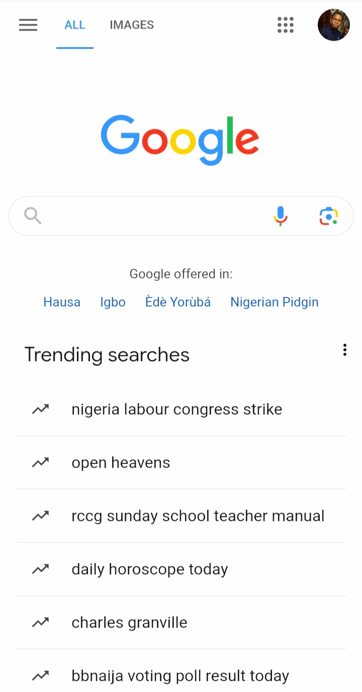

WDD 230: Hick’s Law
JumiaStore
 Hick’s Law, also known as the Hick-Hyman law, named after British and American psychologists William Edmund Hick and Ray Hyman, suggests the time it takes for a person to decide increases with the number of options they have to choose from.
By limiting the number of options on a website, designers can make it easier for users to make decisions.
Hick’s Law, also known as the Hick-Hyman law, named after British and American psychologists William Edmund Hick and Ray Hyman, suggests the time it takes for a person to decide increases with the number of options they have to choose from.
By limiting the number of options on a website, designers can make it easier for users to make decisions.
I choose this picture because a customer visiting the site will not spend so much time clicking on my item. They tried to display as much products as possible, categories them and represent them for easy visibility.
The Rule of Third
StaakStudios
The rule of thirds is a method of breaking up an image or design into different sections using columns and rows that form a grid. There are many ways designers incorporate the rule of thirds into their design process. Most commonly, it’s used as a guide for arranging elements, aligning text, and positioning images and icons in a way that the user can easily interpret and digest.
This picture has implemented the rule of thirds really well in their web page design.
Using the grid, they’ve determined where there should be negative space and where to place their attention-grabbing text. The eye naturally travels from the more graphic title text to the subtle descriptive text on the bottom left.
Fitts’ Law
 Fitts’s Law establishes that the further away a target is and the smaller the size of the target, the longer it takes for a user to acquire. Essentially, this principle can be noticed throughout any interface that involves using a mouse or finger.
Google puts its search field in the center of the screen and menu options in the upper corners. The “Google Search” button is directly below the search input field, and the entire button is clickable Right below the search button is the trending searches in a region which makes it easy for users to follow what’s trending.